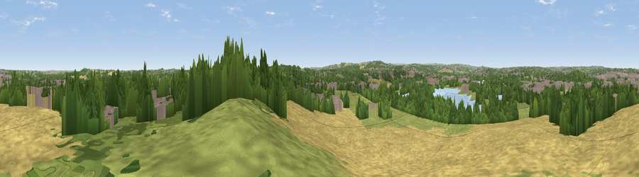

Viewpoint near Kettlethorpe
#23896 in England · top 38% of its area beats it · near KettlethorpeThe view, rendered

A 360° render of this exact spot computed from the terrain model, tree cover and land cover — summer colours, afternoon light, calibrated against photographs of famous viewpoints. Real trees, hedges and buildings will differ in detail.
The panorama
Grey silhouette: terrain skyline in each direction (720 bearings, Earth curvature and refraction included). Dashed green: skyline with trees (+15 m) and buildings (+8 m) as obstacles. Blue strip: how far the ground is visible on each bearing.
Where the view opens
Wedge length = distance to the farthest visible ground on that bearing (vegetation-aware). Rings at 10, 25 and 50 km.
What fills the view
40% cropland · 26% woodland · 16% grassland · 15% built-up · 3% water
Angular shares of the visible panorama (visual magnitude), not map area. Landscape diversity 0.61 (0–1 Shannon).
Key numbers
More beautiful places nearby
The staircase of upgrades: each row has a higher view potential than everything closer. Driving times are estimates from straight-line distance, calibrated against real road routing — check an actual route before setting out.
| Place | Direction | Drive | Score |
|---|---|---|---|
| Viewpoint near Heath | ENE · 2 km | ~6 min | 50.6 |
| Viewpoint near Kirkthorpe | NE · 3 km | ~8 min | 52.3 |
| Viewpoint near Warmfield | NE · 4 km | ~10 min | 58.3 |
| Viewpoint near Woolley | SSW · 6 km | ~13 min | 66.5 |
| Viewpoint near Woolley | SSW · 6 km | ~13 min | 67.9 |
| Viewpoint near Grange Moor | W · 11 km | ~21 min | 69.8 |
| Viewpoint near Hoylandswaine | SSW · 16 km | ~28 min | 71.8 |
| Viewpoint near Hoylandswaine | SSW · 16 km | ~28 min | 72.7 |
53.65898, -1.49115 · source: screening · position refined by local search. Computed location — check access rights before visiting.